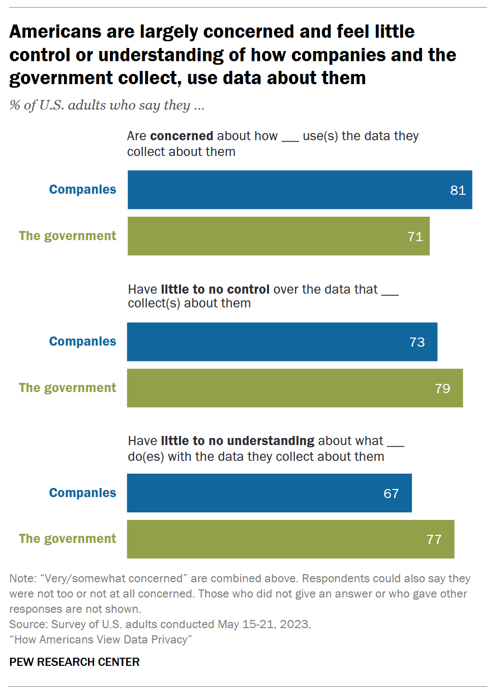

A nationally representative poll conducted by the Pew Research Center in May 2023 demonstrates that the overwhelming majority of US people have little understanding and serious concerns about what their data is used for and feel that they have little to no control over what data is being collected about them.

Most typically, personal data collected by a profit driven company is used to support targeted advertising efforts. When used within reason, targeted advertising can be extremely useful. I am sure many greatly appreciate the personalized discount alerts sent to them by their local grocery store. However, categorically inappropriate use of massive amounts of personal data persists within big tech companies. Extreme prejudice in advertising and addictive content curation based on increasingly intrusive data collection and analysis is the whole growth model within the social media industry. The amount of data that can be collected from the devices we use to access these platforms is unfathomable to the common person and without government intervention, hardware advancements will continue to support an infinite growth model. Major players including Meta and ByteDance have made pushes into extended reality hardware, with existing iterations of hardware packed with external cameras and sensors capable of mapping your entire environment and internals that monitor the movements of your eyes. The ability to measure the attention you give to content via the movement of your eyes would revolutionize targeted advertising and be worth billions.
The slippery slope remains much steeper,
Uncommon Sense